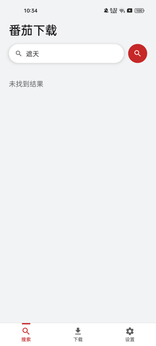
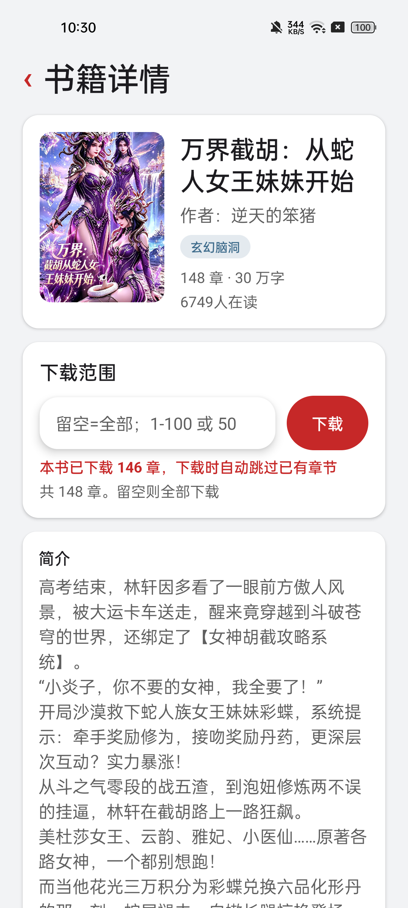
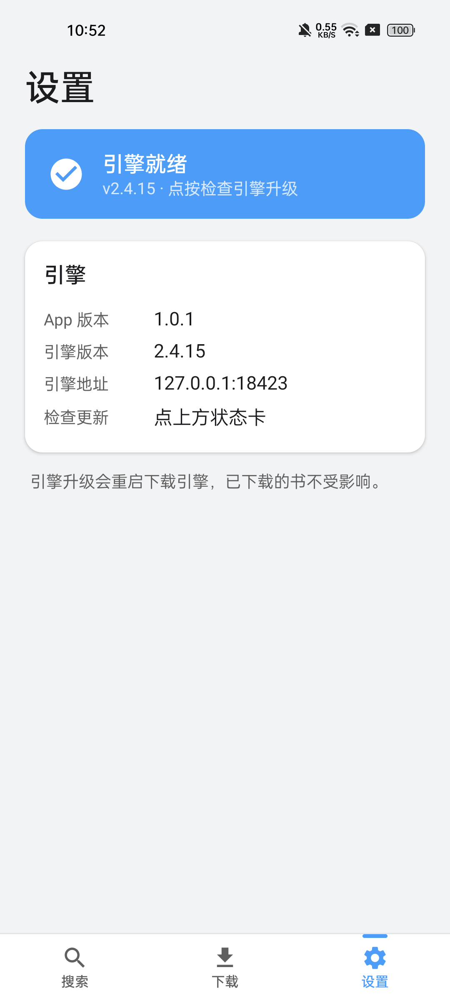
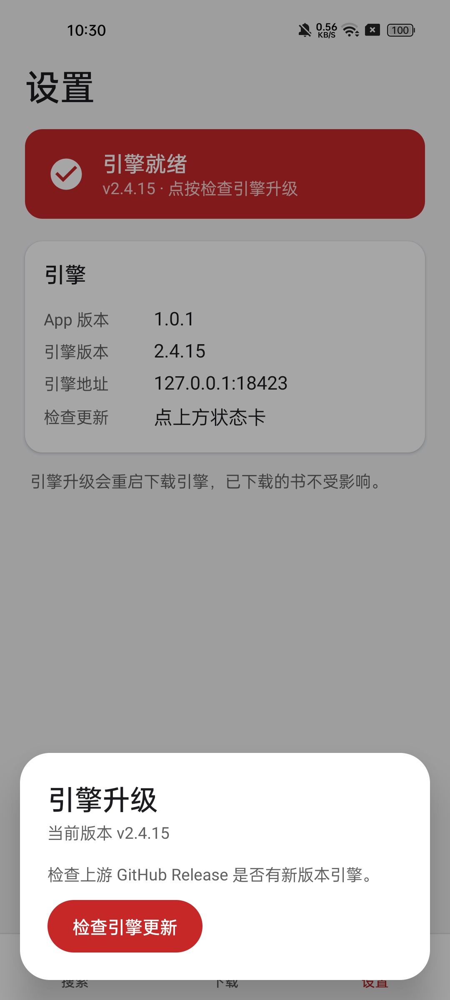

番茄下载 · 各界面截图
V1.0.1 书城货架 UI · Clash Meta 式工具风（浅灰底 / 白卡 / 深番茄红）
① 主页（搜索）
超大标题 + 白卡搜索框 + 番茄红圆形搜索按钮；支持书名 / ID / 番茄链接直达详情页。
② 搜索无结果
上游搜索接口偶发限流返回空（重试即恢复），空态文案处理。

③ 下载任务
白卡列表：封面缩略图 + 已下载章节数（红色高亮）+ 最新章节 + 简介；右下角 FAB = 检查更新；有更新的书出现「更新」按钮（tonal 灰），与实心红「打开」形成层级。
④ 书籍详情（从「更新」进入）
信息卡 / 下载范围卡 / 简介卡三段式；红色提示「本书已下载 146 章，下载时自动跳过已有章节」——用户可自选范围，留空则续传全部缺失章节。

⑤ 设置
引擎状态大卡（就绪=深番茄红 / 启动中=灰底转圈 / 失败=灰底叉圆）+ 引擎信息（App 版本 / 引擎版本 / 地址）。

⑥ 引擎升级浮层
点设置页状态卡打开：查 GitHub Release → 下载（带进度条）→ 自动替换二进制并重启引擎。
